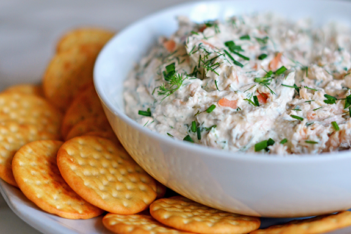

Salmon Dip

Description
This smoked salmon dip is like a flavor party in a bowl! You mix creamy
cream cheese with zesty lemon, fresh dill, briny capers, and a bit of
red onion all diced up with smoked salmon. It's so easy to whip
together—just toss everything in a bowl, blend it up, and chill it until
you're ready to dig in. Whether you're heading to a potluck or just
lounging at home, it's the perfect appetizer to scoop onto a sliced
baguette. Trust me, it disappears fast, so you might want to make a
little extra!
Chef Mo really nailed it with this one. It's one of those dishes that
looks fancy but doesn't make you sweat in the kitchen. Plus, you can
make it ahead of time and let it chill until showtime. Just grab a
crock, spoon the dip in, sprinkle a bit of extra dill on top for that
Instagram-worthy finish, and serve it up with some toasty baguette
slices. It's creamy, tangy, and totally addictive—your friends are gonna
love it!
Ingredients
- 1 (8 ounce) package cream cheese, softened
- 6 ounces smoked salmon, diced
- 2 tablespoons finely chopped fresh dill
- 1 lemon, zested
- 1 tablespoon lemon juice
- 1/2 tablespoon finely chopped capers
- 1 tablespoon finely chopped red onion
Steps
- Begin by ensuring that the cream cheese is softened to room
temperature, which will make it easier to blend later on. Meanwhile,
dice the smoked salmon into small, bite-sized pieces, ensuring they
are evenly cut for a balanced texture in the dip.
- As the cream cheese softens, take the opportunity to finely chop the
fresh dill, red onion, and capers. These ingredients add layers of
flavor and texture to the dip. Additionally, zest the lemon to
extract its fragrant outer layer, and juice it for a zesty kick that
complements the richness of the salmon.
- In a spacious mixing bowl, bring together the softened cream cheese,
diced smoked salmon, freshly chopped dill, vibrant lemon zest, tangy
lemon juice, chopped capers, and the finely diced red onion. The
combination of these ingredients promises a harmonious blend of
creamy, savory, and citrusy notes.
- Take a moment to blend the ingredients thoroughly, ensuring that
each component is evenly distributed throughout the mixture. This
step is crucial to achieving a cohesive and flavorful dip that
showcases the distinct flavors of each ingredient.
- Once mixed, cover the bowl with plastic wrap or transfer the dip
into an airtight container. Place it in the refrigerator to chill
for at least 30 minutes. This chilling period allows the flavors to
meld together, enhancing the overall taste of the dip.
- Before serving, consider adding a final touch by garnishing the dip
with a sprinkle of additional fresh dill. This step not only
enhances the presentation but also adds a burst of herbal freshness
that complements the smoked salmon and citrusy undertones.
- Serve the chilled smoked salmon dip alongside sliced baguette, crisp
crackers, or colorful vegetable sticks. This versatile appetizer is
perfect for gatherings, offering a delightful blend of creamy
texture and robust flavors that are sure to impress guests.